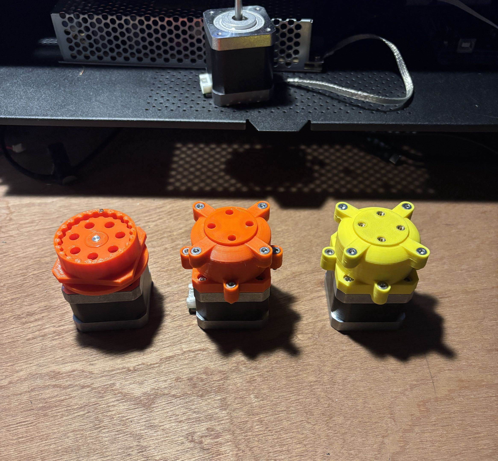
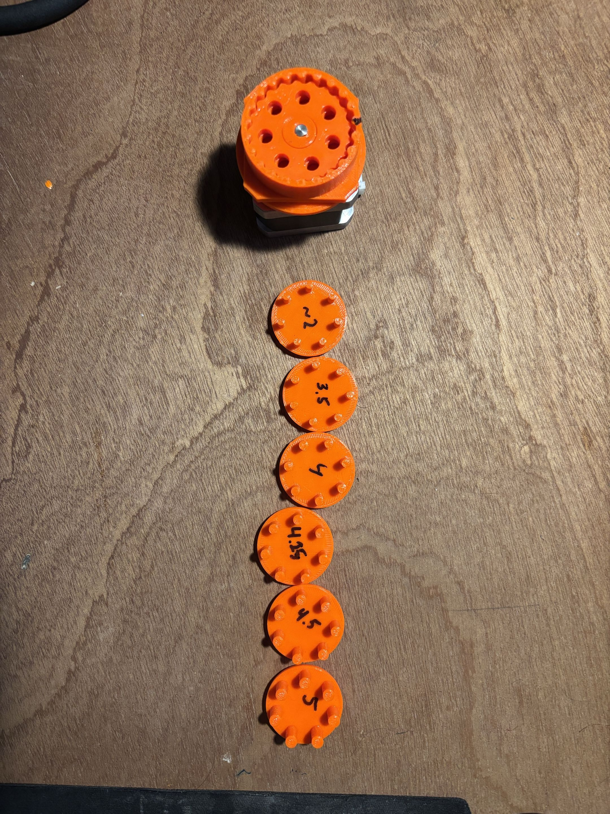
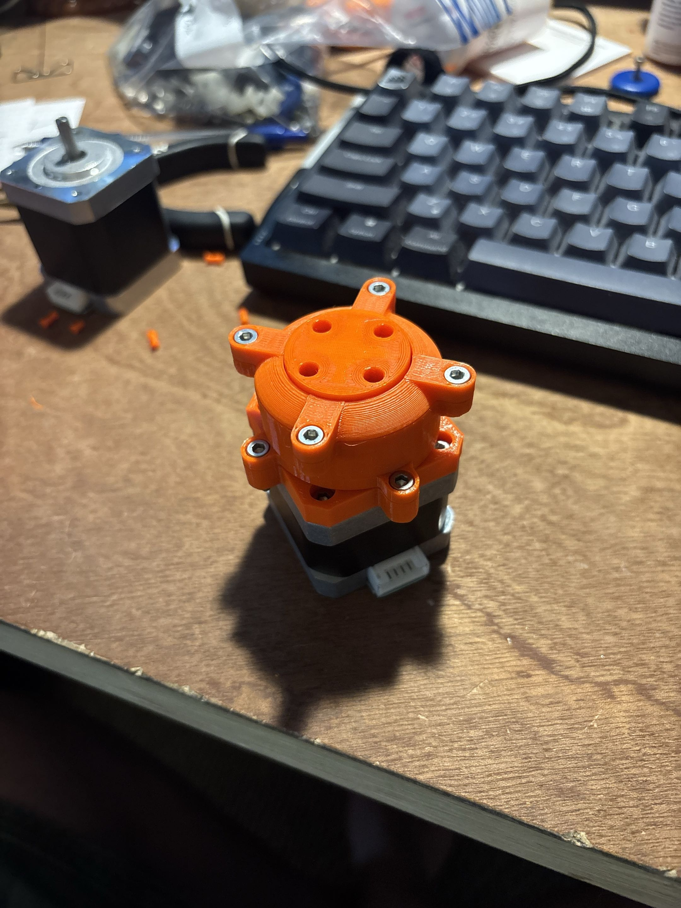

Cycloidal Drive
Designed & fabricated a 22:1 cycloidal gearbox to reduce a NEMA-17 stepper motor
ACTIVE PROJECT -- Reach out with any questions, but more updates here soon!



Note: This is an active project and part of a larger robotic arm that I am currently developing.
I discovered cycloidal gearboxes a few months ago and became interested in building one myself. Around the same time, I had been considering designing a robotic arm, and the two ideas fit together naturally. Cycloidal drives offer extremely low backlash and large reduction ratios in a compact form factor, making them well suited for robotic joints where precision and torque are important.
My current protoype (in yellow) features a 22:1 reduction in a form factor of about 30 mm from the face of the stepper. I am currently working on getting that closer to 20 mm. I designed this from scratch in SolidWorks, and I prototyped in PETG (orange) and PLA (Yellow) on my Prusa CORE ONE FDM 3D printer.
Figure 2 above shows the gearbox running on a NEMA 17 stepper motor powered by a 24 V power supply. Both the motor and power supply were salvaged from an old 3D printer. The system is controlled using an Arduino UNO Rev3 and an A4988 stepper driver, wired together in a simple breadboard circuit.
This project is still in progress, and I will continue to upload updates as the design evolves. Feel free to reach out if you have any questions.